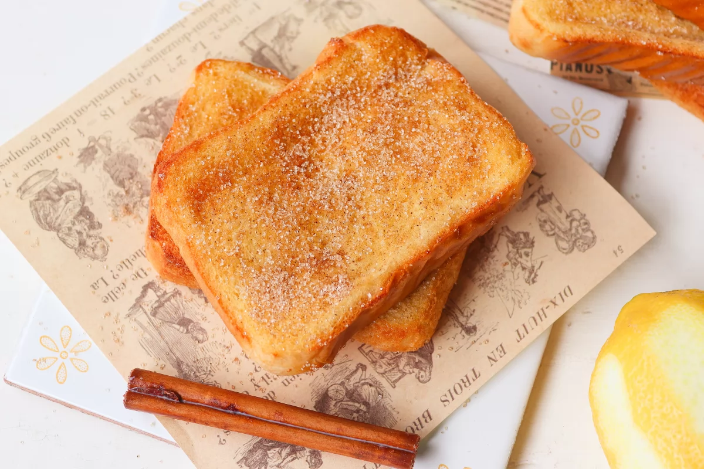

La clásica torrija se hace a base de pan duro, huevos, leche y azúcar. Sin embargo, y partiendo de esta receta tradicional, existen variantes para dar y tomar, desde cambiar la leche por vino a usar distintos tipos de pan o endulzantes.
Nosotros hoy vamos a cambiar la forma de cocinarlas. En lugar de freír las torrijas, las vamos a hacer en el horno. Para ello, es importante mojarlas muy bien en la leche aromatizada y después en el huevo, para que queden jugosas. Una vez fuera del horno, las rebozaremos con azúcar y canela.
En un cazo profundo, vertemos 500 ml de leche entera, 1 rama de canela y la piel de medio limón. Llevamos el cazo al fuego y dejamos que la leche se caliente pero que no llegue a hervir. Se trata de infusionar la leche con la canela y la piel del limón así que, antes de que hierva retiraremos el cazo del fuego y lo reservaremos hasta que no esté muy caliente.
Retiramos la canela y la piel de limón de la leche. Añadimos 50 g de azúcar y batimos bien para que el azúcar no se quede en el fondo del cazo.
Disponemos 6 rebanadas de pan de molde gruesas en una fuente un poco profunda y vertemos sobre ellas la leche infusionada. Dejamos que se empapen bien las rebanadas de pan, pero teniendo cuidado de que no pase demasiado tiempo y el pan se rompa.
Después de 5 minutos aproximadamente el pan habrá absorbido la leche.
Batimos 2 huevos y pasamos cada rebanada de pan mojado en leche por el huevo.
Precalentamos el horno a 200 ºC. Preparamos una bandeja con papel de horno y ponemos sobre este las rebanadas de pan mojadas leche y huevo. Llevamos la bandeja al horno con la función grill. Dejamos que las torrijas se cocinen por un lado durante 5 minutos. Les damos la vuelta y las hacemos por el otro lado otros 5 minutos.
Mientras se cocinan las torrijas, preparamos una fuente con 50 g de azúcar y una cucharadita de canela en polvo para rebozar después las torrijas.
Una vez hechas las torrijas, las sacamos del horno y las rebozamos con el azúcar y canela que habíamos preparado.
Servimos las torrijas recién hechas aunque se conservan bastante bien hasta un par de días.